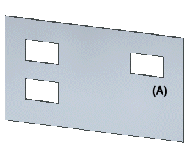
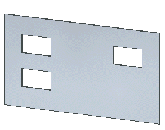

Break command
Breaks the selected feature from the model and makes it a collection of faces. You can select the feature in the graphics window or PathFinder.
This command is available when you have selected a hole that is part of a hole feature set, or a pattern occurrence in a pattern.
When used in Synchronous Sheet Metal, the command will not create a collection of faces for thickness faces. For example, the mirrored feature (A) is actually a cut through a tab and the thickness faces are included as part of the tab definition.

If you select the mirror feature and run the Break command, since the command does not create a face collection for thickness faces, the mirror feature is removed from PathFinder and the thickness faces remain in the model.
